二、上海：胜利之后谁掌握权力
1927年2月19日 · 事实陈述 · 已核阅指定范围
一份二月的总罢工令
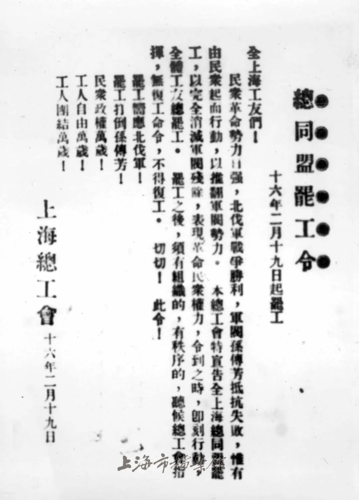
上海总工会总同盟罢工令 · 第二次起义前的动员文书，不是第三次起义的命令。
创作：1927年2月19日；事件：1927年2—4月；上海总工会；原件图来源见档案馆专题。
保留下载原始字节和整幅画面，仅等比显示，不上色、不修复、不伪造原件。；证据边界：第二次起义前的动员文书，不是第三次起义的命令。；原件馆藏编号、原始发表链和数字图像权利未在本轮逐项核实。
核阅：6.1 Terra逐张查看；图说/日期依据来源页，视觉不充当独立身份鉴定。
图片出处 · 来源页未列单图复用许可；本次用于本地历史研究与讲解，未核定公开使用范围上海总工会在第二次武装起义前发布了总同盟罢工令。这份文书保留了工会名称和1927年2月19日的日期，是理解罢工动员与起义准备的一项材料。
它早于3月第三次起义，不能作为第三次起义当日的命令展示。把文书自身日期写清楚，才能避免将连续几次行动混成同一事件。
[S03] [S11]
1927年3月21—22日 · 事实陈述 · 已核阅指定范围
工人起义先改变了上海的控制局面
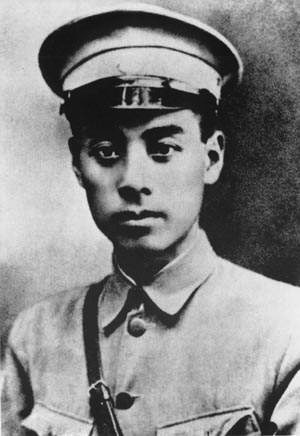
周恩来，1924年 · 用于识别周恩来。采用黑白版本，不使用后期上色版本。
创作：1924年（来源页标注）；事件：1927年3—7月；核心事件为4月12日前后；作者不详；共享资源转引新华网旧页。
本作保留下载原始字节；不重新上色、修复或裁切；网页按比例缩放。扫描及既有处理以来源页为准。；证据边界：早于1927年起义；不能作为指挥现场照片。
核阅：已核对当前文件说明与本稿图注；身份用途和未决项见证据边界。
图片出处 · PD-China；据共享资源页面。未独立补齐其美国版权模板。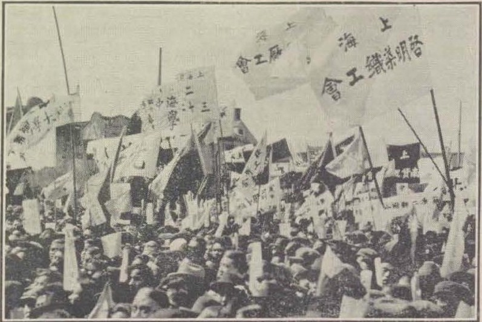
1927年上海工人与学生游行 · 原说明指向南方领导人抵达后的游行；用于呈现当时群众活动，不标作4月13日请愿。
创作：1927年，具体日月未明；事件：1927年3—7月；核心事件为4月12日前后；North-China Daily News；China in Chaos: A Survey of Recent Events（1927）。
本作保留下载原始字节；不重新上色、修复或裁切；网页按比例缩放。扫描及既有处理以来源页为准。；证据边界：不能据此确定十二日或十三日现场，也不据图推算参加人数、武器数或人们政治立场。
核阅：已核对当前文件说明与本稿图注；身份用途和未决项见证据边界。
图片出处 · PD-US-pre1931；据共享资源标注，原刊1927年。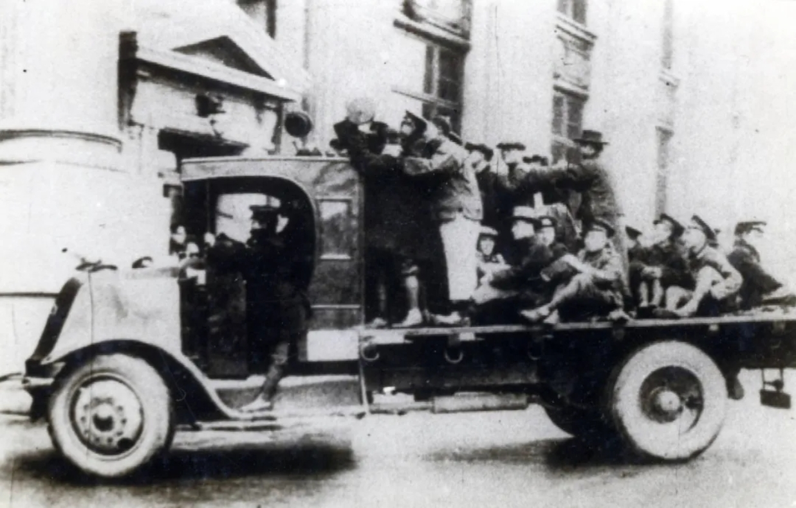
邮务工人乘车赴闸北参战 · 官方图说归于第三次起义，照片为乘车者，不能据画面独立确认每人身份。
创作：1927年3月第三次起义期间，来源未单列摄影日；事件：1927年2—4月；原摄影者未列；专题图说标作邮务工人赴闸北。
保留下载原始字节和整幅画面，仅等比显示，不上色、不修复、不伪造原件。；证据边界：官方图说归于第三次起义，照片为乘车者，不能据画面独立确认每人身份。；原件馆藏编号、原始发表链和数字图像权利未在本轮逐项核实。
核阅：6.1 Terra逐张查看；图说/日期依据来源页，视觉不充当独立身份鉴定。
图片出处 · 来源页未列单图复用许可；本次用于本地历史研究与讲解，未核定公开使用范围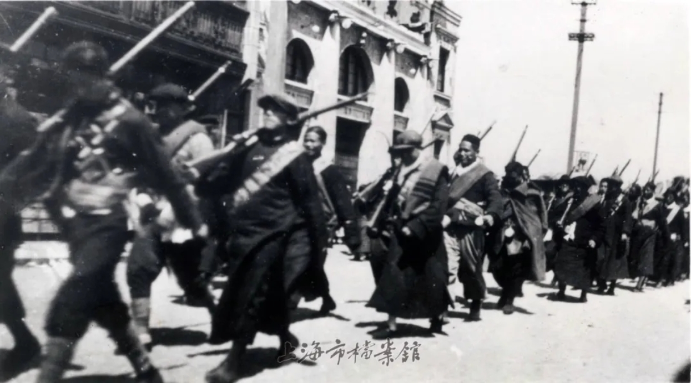
行进中的工人纠察队 · 这是行进场景，不是升旗仪式；旧下载名guild-flag不作为身份依据。
创作：1927年3月第三次起义期间，来源未单列摄影日；事件：1927年2—4月；原摄影者未列；专题图说标作行进中的工人纠察队。
保留下载原始字节和整幅画面，仅等比显示，不上色、不修复、不伪造原件。；证据边界：这是行进场景，不是升旗仪式；旧下载名guild-flag不作为身份依据。；原件馆藏编号、原始发表链和数字图像权利未在本轮逐项核实。
核阅：6.1 Terra逐张查看；图说/日期依据来源页，视觉不充当独立身份鉴定。
图片出处 · 来源页未列单图复用许可；本次用于本地历史研究与讲解，未核定公开使用范围3月21日，上海工人举行第三次武装起义。中共中央和上海区委组织领导，周恩来负责起义军事指挥；陈独秀、罗亦农、赵世炎、汪寿华等也参与领导。此前两次起义均未成功，这一次工人以总罢工和武装行动配合北伐军进军，向军阀部队控制的据点发动进攻。
经过约两天一夜的战斗，起义在22日取得胜利，上海特别市临时市政府随之建立。这里的“控制上海”必须保留地域限定：外国控制的公共租界和法租界不在起义接管范围内。把当时上海画成一个由起义者完全接管的统一行政区域，会误解后来的行动空间与力量关系。
工人纠察队是参与起义、维护工会活动和地方秩序的重要武装。它的存在，使工会不仅能号召罢工，也拥有一定自卫能力。但工人起义成功，并不等于纠察队已经成为可以与正规军长期抗衡的军队；人数、武器、训练和指挥条件都不能混为一谈。
[S01] [S03] [S11]
1927年3月下旬—4月上旬 · 历史解释 · 已核阅指定范围
军队、工会与市政府并未形成稳定共治
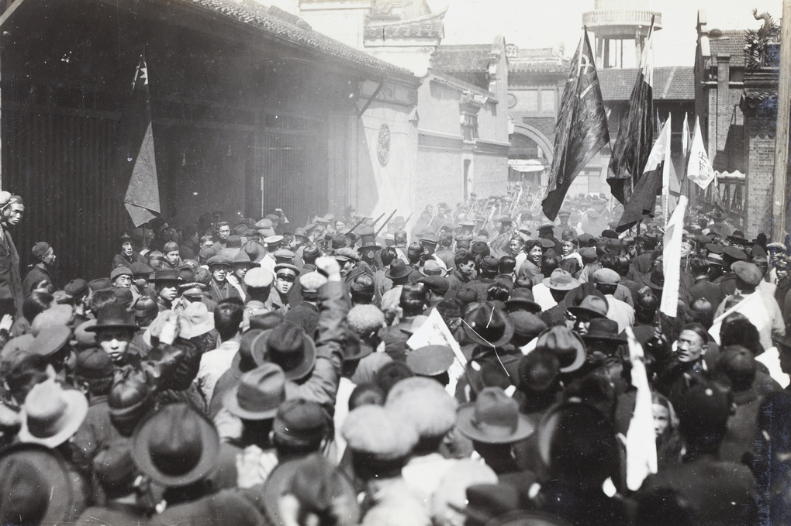
1927年湖州会馆外的工人武装 · 地点与日期据HPC研究标注；现代场馆为遗址纪念空间，不能据对比声称精确同机位或完整原建筑保存。
创作：1927年3月27日；事件：1927年3—4月；现代对照见材料日期；摄影者未明；George Johnson Collection；Special Collections, University of Bristol Library，GJ01-109。
保留原JPEG整图，按比例显示；不作裁切、颜色调整或修复。；证据边界：地点与日期据HPC研究标注；现代场馆为遗址纪念空间，不能据对比声称精确同机位或完整原建筑保存。
核阅：已核对页面说明与原图；现代照仅按报道日期标注，未作EXIF拍摄日判断。
图片出处 · CC BY-NC-ND 4.0；按HPC下载规则用于非商业研究教育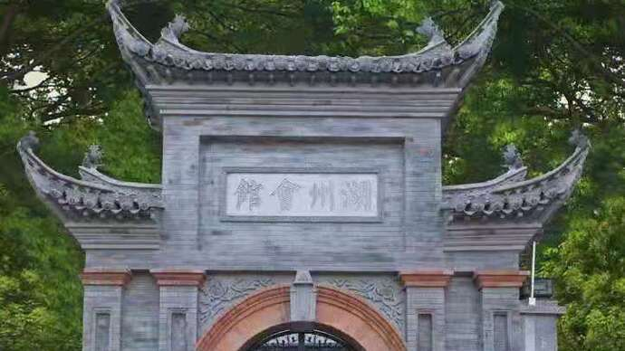
湖州会馆遗址纪念场馆门头：2021年报道配图 · 1932年大部分旧建筑毁损，2020年修缮布展、制作门头；不是1927年原建筑完整保存，也不是2026年实拍。
创作：2021年4月29日报道配图；单图精确摄影日未列；事件：1927年3—4月；现代对照见材料日期；原摄影者未列；静安区政府原文引用上海观察图片。
保留原JPEG整图，按比例显示；不作裁切、颜色调整或修复。；证据边界：1932年大部分旧建筑毁损，2020年修缮布展、制作门头；不是1927年原建筑完整保存，也不是2026年实拍。
核阅：已核对页面说明与原图；现代照仅按报道日期标注，未作EXIF拍摄日判断。
图片出处 · 来源未列单图开放许可；本次仅本地研究与对照，公开使用范围未核定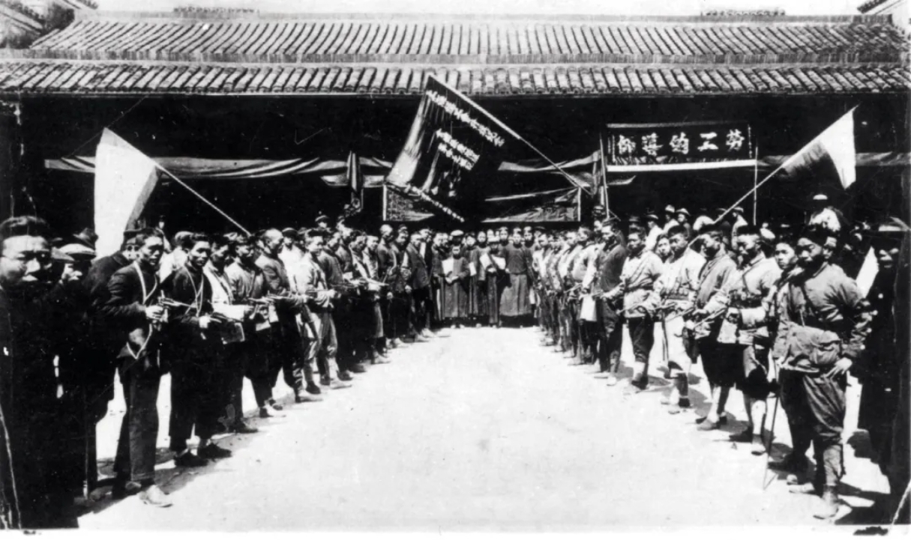
湖州会馆升旗典礼 · 身份和日期依据专题图说；不是四月十二日现场。
创作：1927年3月27日（专题图说）；事件：1927年2—4月；原摄影者未列；来源上海档案信息网专题。
保留下载原始字节和整幅画面，仅等比显示，不上色、不修复、不伪造原件。；证据边界：身份和日期依据专题图说；不是四月十二日现场。；原件馆藏编号、原始发表链和数字图像权利未在本轮逐项核实。
核阅：6.1 Terra逐张查看；图说/日期依据来源页，视觉不充当独立身份鉴定。
图片出处 · 来源页未列单图复用许可；本次用于本地历史研究与讲解，未核定公开使用范围起义之后，国民革命军进入上海。上海总工会与工人纠察队继续活动，临时市政府也试图建立权威。军队、群众组织和地方政权同时存在，关键却在于谁能够作出并执行最后决定。政治上声称属于同一革命阵营，不能消除实际的指挥冲突。
上海党史研究文章记载，蒋介石方面调整驻沪部队，把被共产党寄望的部队调离市区，换用更可控制的兵力。与此同时，共产党试图争取军队支持、加强纠察队和发动群众。部队的实际服从关系，逐渐比联合阵营的公开口号更能决定上海局势。
上海还是列强在华利益和工商活动集中的城市。治安、罢工和政治控制会同时影响多方利益。不过，利益相近不等于所有商人、租界当局、帮会和军队都处在一个完整统一的指挥链上。本稿依据已见材料解释军队与帮会的配合，不把整个上海工商界或所有外国人概括为同一行动者。
湖州会馆在1927年3至4月成为上海总工会总会所。原建筑大部分在1932年战火中毁损，2021年报道中的中兴路828号场馆已作修缮布展并复建牌楼。本稿将1927年旧照与2021年报道配图对照，用于辨认历史地点及其纪念空间；不称现代画面为原建筑完整留存，也不作同机位比较。
[S02] [S09] [S07] [S13]
1927年4月5日 · 历史解释 · 已核阅指定范围
联合宣言仍试图保住合作
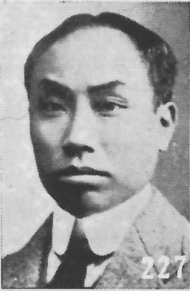
陈独秀，来源标注1919年 · 用于识别人像，拍摄早于本事件；不把1941年书刊出版日当拍摄日。
创作：来源标注1919年1月；1941年书刊收录，2011年扫描；事件：1927年3—7月；核心事件为4月12日前后；原摄影者不详；《最新支那要人传》（朝日新闻社，1941）扫描。
本作保留下载原始字节；不重新上色、修复或裁切；网页按比例缩放。扫描及既有处理以来源页为准。；证据边界：来源所列1919年日期未与原始底片核对；非1927年现场。
核阅：已核对当前文件说明与本稿图注；身份用途和未决项见证据边界。
图片出处 · PD-scan／PD-Japan-oldphoto；据共享资源页面在矛盾已经公开化时，汪精卫和陈独秀仍发表联合宣言，号召两党相互尊重、协商合作。宣言一方面否认共产党要打倒国民党，另一方面声称国民党不会驱逐共产党或摧残工会，并表示赞同不以武力收回上海租界的政策。这是一项为合作作担保的公开政治行动。
这份文件让我们看见，当时的共产党领导层仍希望通过国民党内的合作力量缓和危机。汪精卫的政治影响力，是这种努力的重要支点。但是，公开宣言既不是对驻沪军队的有效约束，也不是危机已经解除的证据。纸面承诺和实际控制武装之间，存在很大距离。
联合宣言不应被拿来说明中共完全没有看到危险。同一时期的决议和党史材料显示，党内也在讨论保存力量、秘密组织与防御问题。更准确的理解是：警觉、抵抗准备和继续合作的希望并存；问题在于这些措施未能阻止随后的武装袭击与缴械。
[S08] [S09] [S02]
三、四月十一日至十三日发生了什么
1927年4月11日夜 · 事实陈述 · 已核阅指定范围
汪寿华遇害：针对组织者的打击已经开始
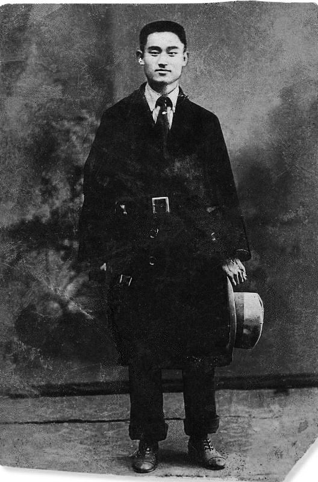
汪寿华，1924年海参崴留影 · 用于识别工会领导者汪寿华，与汪精卫区分；保留整图。
创作：1924年5月15日（共享资源说明）；事件：1927年3—7月；核心事件为4月12日前后；作者不详；共享资源转引旧人物资料页。
本作保留下载原始字节；不重新上色、修复或裁切；网页按比例缩放。扫描及既有处理以来源页为准。；证据边界：早于1927年政变，不是赴约或遇害现场；确切照片日期依赖来源说明。
核阅：已核对当前文件说明与本稿图注；身份用途和未决项见证据边界。
图片出处 · PD-China；据共享资源页面的公有领域标注。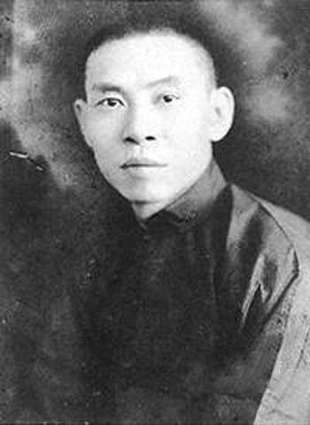
杜月笙：1940年代肖像 · 晚于1927年，只用于身份识别；不能证明1927年邀约、遇害现场或具体行为。
创作：1940年代（共享资源标注）；事件：1927年3—4月；现代对照见材料日期；摄影者不详；共享资源转引旧新闻页。
保留原JPEG整图，按比例显示；不作裁切、颜色调整或修复。；证据边界：晚于1927年，只用于身份识别；不能证明1927年邀约、遇害现场或具体行为。
核阅：已核对页面说明与原图；现代照仅按报道日期标注，未作EXIF拍摄日判断。
图片出处 · PD-China；按共享资源文件页标注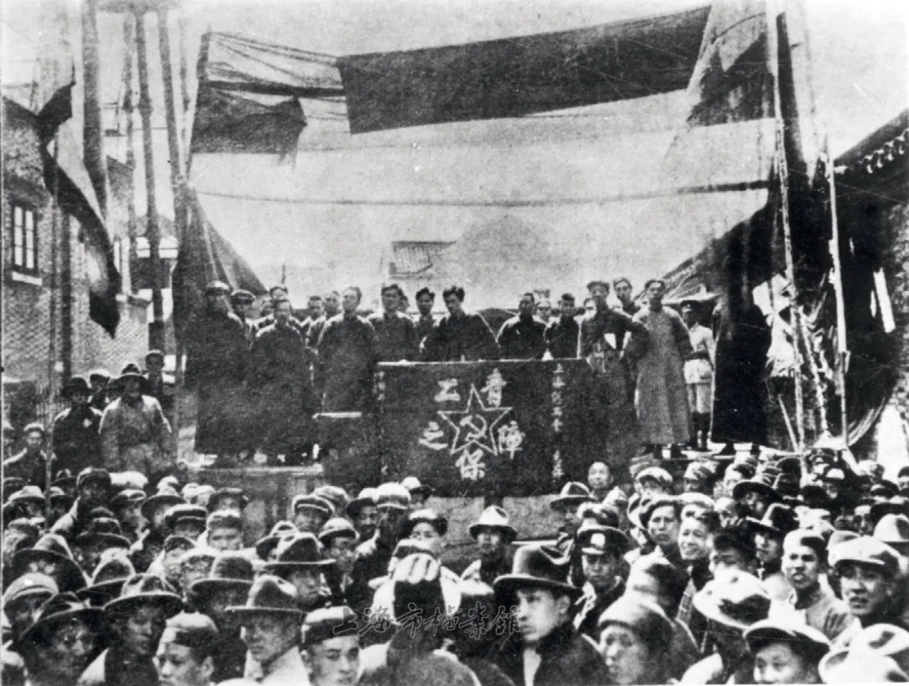
汪寿华授旗并讲话的资料图 · 原图可见集会和旗帜，不能单凭画面辨认每个人或具体授旗瞬间。
创作：起义胜利后；该图说明未单列确切日期；事件：1927年2—4月；原摄影者未列；专题图说指认为汪寿华授旗并讲话。
保留下载原始字节和整幅画面，仅等比显示，不上色、不修复、不伪造原件。；证据边界：原图可见集会和旗帜，不能单凭画面辨认每个人或具体授旗瞬间。；原件馆藏编号、原始发表链和数字图像权利未在本轮逐项核实。
核阅：6.1 Terra逐张查看；图说/日期依据来源页，视觉不充当独立身份鉴定。
图片出处 · 来源页未列单图复用许可；本次用于本地历史研究与讲解，未核定公开使用范围汪寿华是上海总工会领导人，参与组织起义和工人纠察队。按上海与浙江党史资料记载，4月11日夜，他应邀前往杜月笙处后遭到杀害。这一事件发生在大规模袭击工人武装之前，说明行动首先打击了重要工运组织者。
把这一夜放在十二日之前，有助于看清政变并非突然发生的一场街头冲突。对领导者的诱捕、帮会人员的组织和正规军的随后介入，构成相互关联的过程。具体遇害方式、现场话语和最后心理状态，本稿不根据流传故事补写。
这里还要分清两位姓汪的人：汪寿华是上海总工会领导人，是本次镇压的遇害者；汪精卫是国民党政治领袖，四月初参与联合宣言，七月主持武汉分共。他们在这段历史中身份、行动和遭遇完全不同。
[S11] [S02] [S08] [S06]
1927年4月12日 · 事实陈述 · 已核阅指定范围
十二日：先袭击纠察队，再由军队强迫缴械
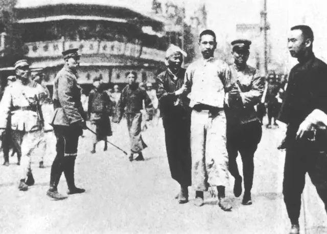
来源标作四一二期间的上海拘捕场景 · 作为镇压场景材料展示，采用下载原字节，未另行裁切或上色。
创作：1927年（来源标注），具体日期未明；事件：1927年3—7月；核心事件为4月12日前后；作者不详；共享资源转引上海对外经贸大学专题页。
本作保留下载原始字节；不重新上色、修复或裁切；网页按比例缩放。扫描及既有处理以来源页为准。；证据边界：原始摄影机构和画中人物身份未追溯；仅标作来源归于四一二期间的拘捕场景，不能证明被捕者姓名、结局或精确时间。
核阅：已核对当前文件说明与本稿图注；身份用途和未决项见证据边界。
图片出处 · PD-China及PD-US-pre1931；据共享资源页面。4月12日凌晨，帮会等武装人员向上海工人纠察队发动袭击。随后，国民党军队以调解冲突等名义介入，强迫纠察队交出武器。上海总工会等组织遭到占领或查封，人员遭捕杀。不同叙述在具体兵力和各点时间上不尽一致，但帮会袭击、军队缴械和镇压工会这一基本过程，可以相互核对。
“调解”在这里不是中性的叙事结论，而是军队介入时使用的名义。实际结果，是独立于蒋介石控制的工人武装被解除。先使工人纠察队被卷入冲突，再由正规军夺去其武器，改变了上海的力量对比，也使后续搜捕更容易进行。
蒋介石是发动清党、掌握相关军政力量的关键领导者。帮会成员与执行缴械、搜捕的军队承担各自行动责任。不能因为部分暴力由帮会先出面，就把这场行动降为脱离政治指挥的黑帮斗殴；同样，不宜在未见命令原件时虚构每一处现场都由蒋本人逐项口授。
[S04] [S02] [S05] [S07]
1927年4月13日 · 事实陈述 · 已核阅指定范围
十三日：罢工与请愿遭到武力镇压
工人组织没有在缴械后立即停止抗议。4月13日，上海工人举行罢工，群众集会并游行，请求释放被捕者、归还武器等。游行队伍在宝山路一带遭到军队开枪镇压。十二日的缴械与十三日的枪击是相连的两件事，不能把所有伤亡都压缩到“十二日凌晨”。
对参与者来说，抗议仍可能延续此前通过罢工、集会和群众压力争取政治结果的经验。但在纠察队已被解除武装后，群众动员难以阻止正规军使用武力。政治参与的空间随之急剧缩小，工会成员和组织者继续面临拘捕风险。
这个转折显示，事件影响的不只是两个党的领导层关系。普通工人的组织权、自卫能力和人身安全，都在短时间内发生变化。此后上海公开工运遭到严重打击，保存组织、转入秘密活动成为共产党与工运工作的重要问题。
[S04] [S02] [S09]
四、镇压、伤亡与责任怎样辨认
1927年4月中旬起 · 历史解释 · 已核阅指定范围
“清党”在实际执行中超出了党籍清理
“清党”字面上可以指清除被认定不合资格的国民党员。四一二前后的实际行动还包括解散组织、收缴武器、拘捕与杀害共产党人和其他被认定的左派、工运参与者。因而，只把它写成党内名单调整，会遗漏事件中决定性的暴力。
镇压并未在上海一天内结束。东南、华南多地随后出现针对共产党与群众组织的清党行动。各地的时间、执行者和具体规模需要分别核对，不能把全国不同阶段的损失全部算作上海十二日现场的结果。
对事件名称也应作说明。本稿沿用用户指定、也是中共党史通行的“四·一二反革命政变”。“反革命”包含对革命方向与政治责任的评价；一些国民党叙述使用“清党”，英文研究常称Shanghai massacre或April 12 purge。名称提示叙述立场，具体发生的缴械、搜捕和杀害仍需要逐项核对。
[S04] [S05] [S07]
1927年4—5月 · 存在争议 · 已核阅指定范围
死、伤、失踪与不同时间窗不能相加成一个数字
本次阅读没有得到可以独立复算的完整遇害名单或统一统计表。南京党史网把十二日描述为工人死伤300余人，把十三日描述为死伤数百人。这些数字的口径是“死伤”，不能改写成相同数量的死亡。
《剑桥中国史》该章公开摘要，则把当天以及随后一个月合在一起，估计有数千人被杀。它采用更长时间窗，并以被杀者为对象；本次未读到该章完整注释，不能验证其每一项计数依据。它与前述单日死伤数字不能直接比较、求平均或相加。
因此，正文确认发生了大规模暴力镇压与人员伤亡，但不提供一个装作精确的“十二日当天死亡总数”。如果后续补进档案名单或统计表，必须同时写清地区、起止日期、死亡或死伤口径、是否含失踪及重复计算办法，再讨论估计为何不同。
[S04] [S07]
五、从上海决裂到武汉分共
1927年4月18日 · 事实陈述 · 已核阅指定范围
南京另立政府，国民党内部仍在争夺正统
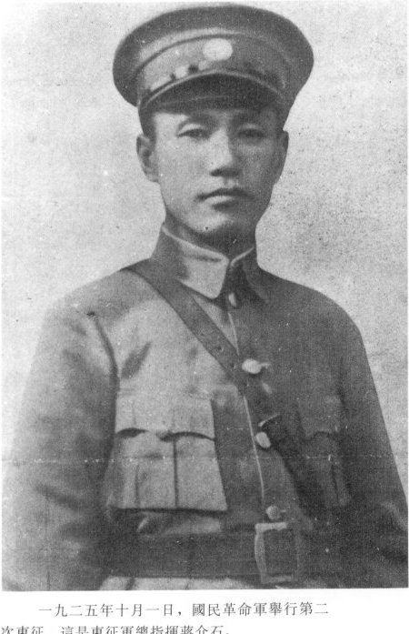
蒋介石，1925年 · 人物身份参考，早于1927年政变，非政变现场。
创作：1925年（来源说明与第二次东征相关）；事件：1927年3—7月；核心事件为4月12日前后；作者不详；经维基共享资源转引。
本作保留下载原始字节；不重新上色、修复或裁切；网页按比例缩放。扫描及既有处理以来源页为准。；证据边界：不能证明1927年任何现场行动、命令内容或心理状态。
核阅：已核对当前文件说明与本稿图注；身份用途和未决项见证据边界。
图片出处 · PD-China；据共享资源页面的公有领域标注。首次发表链未独立追溯。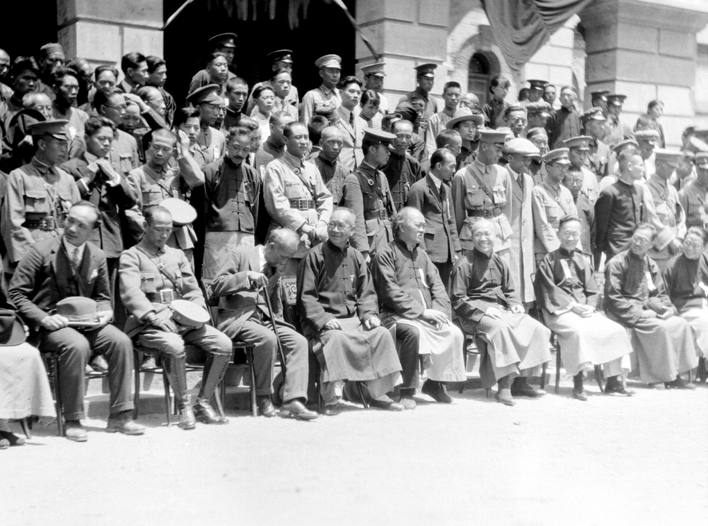
1927年4月18日南京定都庆典合影 · 1927年4月18日南京定都庆典人物合影，HPC Fu-n051。
创作：1927年4月18日；事件：1927年4月18日；傅秉常（Fu Bingchang）；藏C. H. Foo与Y. W. Foo，University of Bristol Historical Photographs of China，Fu-n051。
完整原图等比例缩放，不裁切、不修图、不使用焦点放大。；证据边界：依据档案说明识别日期、活动及人物，不凭照片推断全部政治决定或指挥关系；不采纳页面附带其他政治职务概括。
核阅：档案说明已核阅，视觉另见Terra原图核验。
图片出处 · CC BY-NC-ND 4.0；本地研究预览。商业使用须另获权利人许可。4月18日，南京国民政府成立，与原在武汉的国民政府相对立。上海的武装清党因此与一个新的党政权力中心建立相连。北洋北京政府依然存在，所以当时不能简单画成只有南京、武汉两块全国版图；南京也并未在成立之日就控制整个中国。
武汉方面在四一二后与蒋介石决裂，却仍与共产党维持一段合作。也就是说，国共关系和国民党内部关系同时在变化：上海的蒋介石阵营已经进行暴力反共，武汉方面则试图继续原有合作，并主张自身的国民党和国民政府合法性。
“宁汉分裂”的宁指南京，汉指武汉。它主要描述国民党党政中心的分裂，不等于“南京全是国民党、武汉全是共产党”。武汉政府不是共产党政府，其中政治领袖、军事将领、共产党人及其他参与者的目标并不相同。
[S05] [S06]
1927年7月13—15日 · 事实陈述 · 已核阅指定范围
七月武汉分共，第一次合作全面破裂
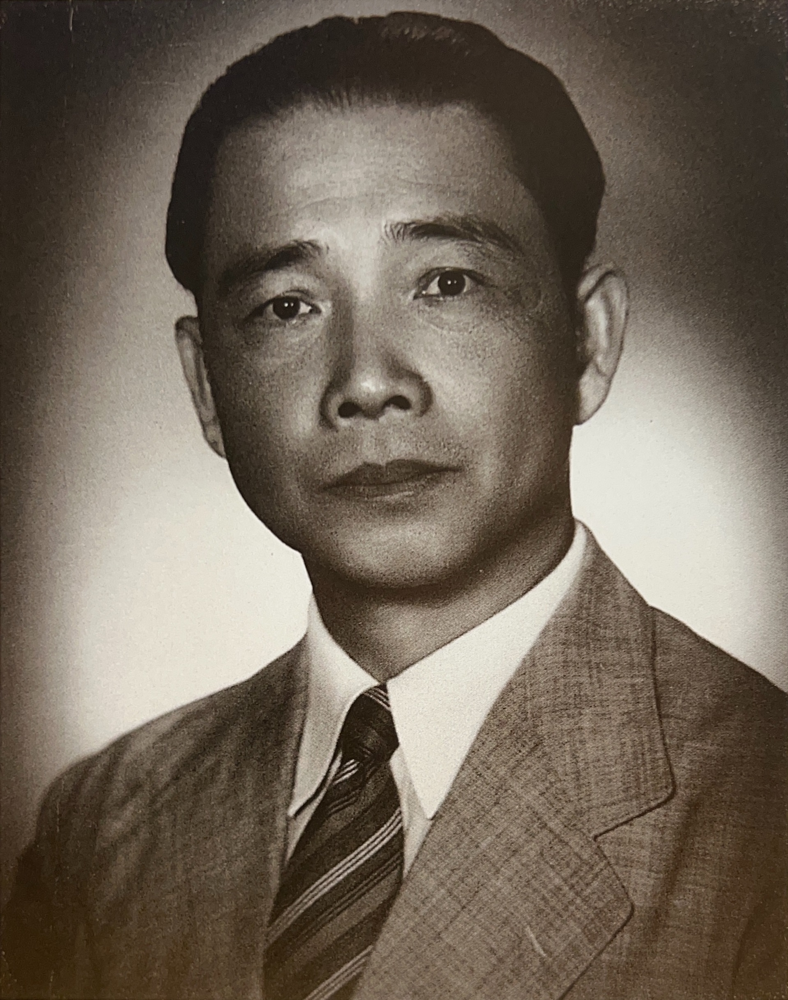
汪精卫，拍摄日期未明 · 仅作身份识别，不称为1927年照片，不从服装推定具体拍摄年份。
创作：不详；1994年《中国近代珍藏图片库·蒋介石与国民政府（中）》收录；事件：1927年3—7月；核心事件为4月12日前后；作者不详；中国第二历史档案馆图片集，经共享资源转引。
本作保留下载原始字节；不重新上色、修复或裁切；网页按比例缩放。扫描及既有处理以来源页为准。；证据边界：拍摄日期、原摄影者和首次发表信息未在本轮查明，不能证明其1927年所在地点。
核阅：已核对当前文件说明与本稿图注；身份用途和未决项见证据边界。
图片出处 · PD-China；据共享资源页面的公有领域标注。四月以后，中共中央仍把武汉作为重要政治活动中心。共产党人继续与武汉国民党合作，但当地工农运动、军政力量和党派关系持续紧张。上海的镇压已经表明合作可能转向武力排除，武汉方面并未因此成为永久可靠的保护者。
7月13日，中共中央发表宣言，决定撤回参加国民政府的共产党员，同时表示愿与国民党内革命分子继续合作。7月15日，汪精卫主持国民党中央常委会扩大会议，正式与共产党决裂。中共党史把这一节点作为第一次国共合作全面破裂的标志。
因此，四一二可以说是第一次合作破裂的关键转折，但若讨论整个合作机制何时全面瓦解，必须继续看到七月武汉分共。两者相隔三个月，中间仍存在真实的合作、争取和政策变化；不能把七月的选择提前写成四月所有人已经共同作出的决定。
[S06] [S05]
1927年8月1—7日 · 事实陈述 · 已核阅指定范围
中共随后转向组织武装斗争
在上海和武汉先后失去公开合作空间后，中共逐步调整斗争方式。8月1日南昌起义发动；8月7日，中共中央在汉口召开紧急会议，确立土地革命和武装反抗国民党统治的方针。这些行动属于1927年危机之后的政治与军事转向。
它们与四一二存在历史联系，却不是十二日当天自动发生的后果。组织和部队需要重新集结，党内对战略、群众工作和军事力量的认识也经历争论。此后道路有多次挫折，不能把后来成功的结局倒推为1927年已经清晰可见的路线。
[S12]
参与者：目标、限制与当时所知
蒋介石｜国民革命军总司令
蒋介石，1925年 · 人物身份参考，早于1927年政变，非政变现场。
创作：1925年（来源说明与第二次东征相关）；事件：1927年3—7月；核心事件为4月12日前后；作者不详；经维基共享资源转引。
本作保留下载原始字节；不重新上色、修复或裁切；网页按比例缩放。扫描及既有处理以来源页为准。；证据边界：不能证明1927年任何现场行动、命令内容或心理状态。
核阅：已核对当前文件说明与本稿图注；身份用途和未决项见证据边界。
图片出处 · PD-China；据共享资源页面的公有领域标注。首次发表链未独立追溯。目标：集中军政权力，排除共产党及独立工人武装对其控制的制约。
限制：面对国民党内部武汉中心的竞争，依靠实际服从的部队和地方支持力量。
当时所知：其阵营已与工会及共产党发生矛盾，并通过清党和军事行动改变局势；不以照片或后来的胜负推定每项现场命令。
[S05] [S07] [S09]
陈独秀｜中共中央总书记
陈独秀，来源标注1919年 · 用于识别人像，拍摄早于本事件；不把1941年书刊出版日当拍摄日。
创作：来源标注1919年1月；1941年书刊收录，2011年扫描；事件：1927年3—7月；核心事件为4月12日前后；原摄影者不详；《最新支那要人传》（朝日新闻社，1941）扫描。
本作保留下载原始字节；不重新上色、修复或裁切；网页按比例缩放。扫描及既有处理以来源页为准。；证据边界：来源所列1919年日期未与原始底片核对；非1927年现场。
核阅：已核对当前文件说明与本稿图注；身份用途和未决项见证据边界。
图片出处 · PD-scan／PD-Japan-oldphoto；据共享资源页面目标：推进国民革命和工人运动，同时尽力维持与国民党合作。
限制：既受合作政策和共产国际影响，又缺少可直接抗衡正规军的武装力量；中央与上海地方之间还有信息和政策分歧。
当时所知：材料显示其已认识缴械危险并讨论防御，也签署汪陈宣言争取缓和。不能概括为完全不知危险或已掌握对方全部计划。
[S02] [S08] [S09]
周恩来｜上海工人第三次武装起义军事指挥者
周恩来，1924年 · 用于识别周恩来。采用黑白版本，不使用后期上色版本。
创作：1924年（来源页标注）；事件：1927年3—7月；核心事件为4月12日前后；作者不详；共享资源转引新华网旧页。
本作保留下载原始字节；不重新上色、修复或裁切；网页按比例缩放。扫描及既有处理以来源页为准。；证据边界：早于1927年起义；不能作为指挥现场照片。
核阅：已核对当前文件说明与本稿图注；身份用途和未决项见证据边界。
图片出处 · PD-China；据共享资源页面。未独立补齐其美国版权模板。目标：组织工人武装起义、维护工人力量，并在危机后讨论调整应对。
限制：工人武装与正规军实力不对称，军事行动受全党政策和城市条件制约。
当时所知：参与上海地方斗争，事后在党内讨论中批评中央指导和军事应对；此处不虚构其在每个袭击据点的现场行动。
[S01] [S03] [S02]
汪寿华｜上海总工会委员长
汪寿华，1924年海参崴留影 · 用于识别工会领导者汪寿华，与汪精卫区分；保留整图。
创作：1924年5月15日（共享资源说明）；事件：1927年3—7月；核心事件为4月12日前后；作者不详；共享资源转引旧人物资料页。
本作保留下载原始字节；不重新上色、修复或裁切；网页按比例缩放。扫描及既有处理以来源页为准。；证据边界：早于1927年政变，不是赴约或遇害现场；确切照片日期依赖来源说明。
核阅：已核对当前文件说明与本稿图注；身份用途和未决项见证据边界。
图片出处 · PD-China；据共享资源页面的公有领域标注。目标：组织工会、工人纠察队和群众行动，维护起义后的工人组织与权利。
限制：工会领导层暴露在政治与暴力风险中，武装与正规军不相匹敌。
当时所知：参与起义与工会组织；按党史记载于4月11日夜遇害。本稿未重建其赴约前掌握了哪些具体警报。
[S11] [S03]
汪精卫｜国民党政治领袖、武汉方面主要领导人
汪精卫，拍摄日期未明 · 仅作身份识别，不称为1927年照片，不从服装推定具体拍摄年份。
创作：不详；1994年《中国近代珍藏图片库·蒋介石与国民政府（中）》收录；事件：1927年3—7月；核心事件为4月12日前后；作者不详；中国第二历史档案馆图片集，经共享资源转引。
本作保留下载原始字节；不重新上色、修复或裁切；网页按比例缩放。扫描及既有处理以来源页为准。；证据边界：拍摄日期、原摄影者和首次发表信息未在本轮查明，不能证明其1927年所在地点。
核阅：已核对当前文件说明与本稿图注；身份用途和未决项见证据边界。
图片出处 · PD-China；据共享资源页面的公有领域标注。目标：维持其主张的国民党政治领导，四月公开支持合作，七月转向与共产党决裂。
限制：武汉阵营内部的军政关系、工农运动和与南京竞争均构成压力。
当时所知：4月5日签署公开联合宣言，7月15日主持分共会议。后一个行为不能倒推其4月已经知晓或参与上海每项行动。
[S08] [S05] [S06]
上海工人及工会组织｜并非意见完全相同的单一群体
1927年上海工人与学生游行 · 原说明指向南方领导人抵达后的游行；用于呈现当时群众活动，不标作4月13日请愿。
创作：1927年，具体日月未明；事件：1927年3—7月；核心事件为4月12日前后；North-China Daily News；China in Chaos: A Survey of Recent Events（1927）。
本作保留下载原始字节；不重新上色、修复或裁切；网页按比例缩放。扫描及既有处理以来源页为准。；证据边界：不能据此确定十二日或十三日现场，也不据图推算参加人数、武器数或人们政治立场。
核阅：已核对当前文件说明与本稿图注；身份用途和未决项见证据边界。
图片出处 · PD-US-pre1931；据共享资源标注，原刊1927年。目标：参与反军阀与反帝运动，争取工人权益、组织活动和自卫空间。
限制：起义后的武装力量有限；在军队缴械和镇压下，罢工与集会难以提供人身保障。
当时所知：参与者所处岗位与掌握消息各不相同，本稿不把少数领导层的判断套到所有工人身上。
[S03] [S04] [S09]
资料改动说明
原始表述：用户只提供事件名“四·一二反革命政变”，未提供正文。
调整后：保留标题，新增背景、行动进程、参与者、后果、术语与证据边界。
依据：本稿为重新组织的解释稿，不是对用户原文的逐句改写。研究日期2026-10-28只进入来源记录，不进入历史时间线。 [S01] [S08] [S05]
原始表述：部分来源叙述将“四一二”简写为第一次国共合作结束。
调整后：区分上海四月决裂与武汉七月分共，后者标志第一次合作全面破裂。
依据：S05与S06保留两地和两个阶段；S07摘要使用更压缩的叙述。 [S05] [S06] [S07]
原始表述：来源中的“死伤300余”“数百死伤”和跨一个月“数千人被杀”。
调整后：按时间范围与统计对象分别列示，不合并为十二日死亡总数。
依据：数字未附可独立复算的统一名单；死亡与死伤、单日与累计不是同一口径。 [S04] [S07]
原始表述：S02对汪陈宣言日期的相对写法，以及对《关于上海工作的决议》会议日期的叙述。
调整后：宣言采用S08明确刊载的4月5日；决议只用于政策内容，不把10日会议和11日文稿日期强行统一。
依据：保留不同文献之间的日期差异；转录底本与原版扫描核对范围已说明。 [S02] [S08] [S09]
原始表述：已确认解释稿保留7张图片；用户随后要求尽可能多的真实史实／文物图及地点今昔对照。
调整后：新增8张真实材料，补一项二月文书说明及湖州会馆沿革图注；已确认历史主线、伤亡口径与其余正文不改。
依据：2026-10-28本聊天用户追加要求；新增原图由6.1 Terra核对。005行进队伍、006升旗仪式的编号错配已修正。现代图片标2021年报道，不冒充今日摄影。新增视觉随代表片段待用户审阅。 [S03] [S13] [P-hpc] [P-archive] [P-du]
来源及核阅范围
状态：已阅读指定范围；定位：“党史回眸”1927年3月21日条
核阅范围：已读该条，核对第三次起义的发动日、领导集体与外国租界除外的地域范围。官方党史纪事，不据其评价推定所有参与者动机。
状态：已阅读指定范围；定位：2025-04-14；“陈独秀在赴汉前夕多策并举”“党内出现较大的意见分歧”两节；结尾决策评估
核阅范围：全文已读；采用调兵、工纠队缴械、宝山路枪击及党内意见分歧的具体记载。作者为上海市委党史研究室研究人员，网页“注释从略”，不是已逐一核验的会议原件；不照搬其性格判断及必然论。该文汪陈宣言日期写法与S08不一致，正文据S08保留4月5日。
状态：已阅读指定范围；定位：2026-08-03；导语及图说3—6
核阅范围：已读正文和全部图说；核对周恩来职责、3月21日发动、22日胜利、临时市政府和工人纠察队。未把网页展陈图片视为已经取得复用许可。
状态：已阅读指定范围；定位：2013-06-14；正文唯一长段
核阅范围：已读全文，核对帮会袭击、军队以调解为名缴械与次日游行。伤亡数字只作为该站估计引述；未见原始计数表，未独立核验人数。该文使用中共党史评价框架。
状态：已阅读指定范围；定位：主内容“宁汉分裂与清党”；4月12日、17日、18日及7月条
核阅范围：已读相关教学段落，与大陆党史交叉核对南京成立政府和武汉分共的先后。该页偏重国民党政权与组织叙事，对政治动机的判断不直接当成事实；未核验页面列举的全部档案原件。
状态：已阅读指定范围；定位：2012-11-20；第1—2段、7月13日与15日两段
核阅范围：已读全文；采用4月后武汉继续合作、7月13日撤回党员与15日正式决裂的组织动作。“全面破裂”为该党史体系的分期。
状态：已阅读指定范围；定位：Chapter 3，公开Summary首段及THE INITIAL CONSOLIDATION OF POWER开头
核阅范围：仅阅读公开摘要及可见开头，未读付费完整章节和注释。摘要将青帮暴力与4月18日南京政府相连，人数统计跨越当天和随后一个月；不与S04单日死伤口径相加。
状态：已阅读指定范围；定位：全文、署名日期及“根据一九二七年四月五日《申报》刊印”底注
核阅范围：已读转录全文，属于当事人公开政治文件，反映对外承诺与合作主张，不能证明承诺得到执行。尚未逐字对勘《申报》原版扫描。宣言中关于压迫工会属谣言的说法不作后见事实采用。
状态：已阅读指定范围；定位：第4—8段、九项要求及末段；底注“译自中共驻共产国际代表团档案英文稿”
核阅范围：已读全部转录；用于说明保存实力、群众动员、秘密组织与争取领导权并存的政策内容。标题日期为4月11日，S02将相关会议叙于10日；本文只写4月上旬末期，不裁定会议、通过与文稿成文的精确关系。不是亲见中文原件。
状态：已阅读指定范围；定位：2012-10-24；西湖会议段、末段1924年1月20—30日国民党一大
核阅范围：已读全文，采用以个人身份入党、组织仍保持独立与第一次合作的基本形式。对各方心理及政策效果的评价不作无条件复述。
状态：已阅读指定范围；定位：2021-06-10；3月起义、3月27—28日总工会与4月11日遇害段
核阅范围：已读传记相关段落，采用总工会职务、4月11日赴杜月笙处后遇害的记载。对话、临终细节和具体杀害方式不在本稿重现，未当成已独立核对的目击事实。
状态：已阅读指定范围；定位：2021-06-28；1923—1927年条，重点1926年3月、5月、7月及1927年4月、7月、8月
核阅范围：已读上述年份范围，核对中山舰事件、整理党务案、北伐誓师、南昌起义与八七会议。未将该长篇其余年代算成本作核阅范围。3月起义胜利日按S01与S03细化成21日发动、22日获胜。
状态：已阅读指定范围；定位：Summary／Description、Date、Source、Licensing与File history
核阅范围：已读文件说明和许可区；实际JPEG已下载并记录SHA-256。人物照只用于身份识别；日期、作者和原始出版链的未决项保留在图注，不将维基共享资源的上传日期当成照片日期。
状态：已阅读指定范围；定位：Summary／Description、Date、Source、Licensing与File history
核阅范围：已读文件说明和许可区；实际JPEG已下载并记录SHA-256。人物照只用于身份识别；日期、作者和原始出版链的未决项保留在图注，不将维基共享资源的上传日期当成照片日期。
状态：已阅读指定范围；定位：Summary／Description、Date、Source、Licensing与File history
核阅范围：已读文件说明和许可区；实际JPEG已下载并记录SHA-256。人物照只用于身份识别；日期、作者和原始出版链的未决项保留在图注，不将维基共享资源的上传日期当成照片日期。
状态：已阅读指定范围；定位：Summary／Description、Date、Source、Licensing与File history
核阅范围：已读文件说明和许可区；实际JPEG已下载并记录SHA-256。人物照只用于身份识别；日期、作者和原始出版链的未决项保留在图注，不将维基共享资源的上传日期当成照片日期。
状态：已阅读指定范围；定位：Summary／Description、Date、Source、Licensing与File history
核阅范围：已读文件说明和许可区；实际JPEG已下载并记录SHA-256。人物照只用于身份识别；日期、作者和原始出版链的未决项保留在图注，不将维基共享资源的上传日期当成照片日期。
状态：已阅读指定范围；定位：Summary／Description、Date、Source、Licensing与File history
核阅范围：已读文件说明和许可区；实际JPEG已下载并记录SHA-256。人物照只用于身份识别；日期、作者和原始出版链的未决项保留在图注，不将维基共享资源的上传日期当成照片日期。
状态：已阅读指定范围；定位：Summary／Description、Date、Source、Licensing与File history
核阅范围：已读文件说明和许可区；实际JPEG已下载并记录SHA-256。人物照只用于身份识别；日期、作者和原始出版链的未决项保留在图注，不将维基共享资源的上传日期当成照片日期。
状态：已阅读指定范围；定位：2021-04-29报道正文：中兴路828号、1932年毁损、2020年修缮布展；正文第一幅图片
核阅范围：已读政府文章正文与原HTML图片src。用于解释湖州会馆历史地点与2021年遗址场馆的关系。单图拍摄者、精确拍摄日和复用许可未列，不能把报道日期当成EXIF拍摄日，也不称2026年实拍。
状态：已阅读指定范围；定位：标题、Date、Notes及Download；另读该站下载许可页
核阅范围：实际读取1927年3月27日湖州会馆外工人武装照片说明，下载原JPEG。该站为研究教育用途提供CC BY-NC-ND 4.0；本预览保留完整画幅且不推近裁切。
状态：已阅读指定范围；定位：图说1、4、5、6及HTML对应001/004/005/006/007.jpeg
核阅范围：实际读取图说与原始图片顺序，逐张下载。005是行进中的纠察队，006才对应升旗；已据6.1 Terra原图检查修正编号错配。该页来源党史镜报，未列单图权属许可，不冒称开放许可。
状态：已阅读指定范围；定位：Description、Date、Licensing
核阅范围：已读共享资源说明：杜月笙，1940年代肖像，PD-China标注。此图仅用于身份识别，早期事件不由这张晚期肖像证明。
状态：已阅读指定范围；定位：Identifier Fu-n051；Notes；Date 18 April 1927；Photographer Fu Bingchang；另核阅Re-use条款。
核阅范围：仅采用原图、日期、活动和作者／馆藏信息；不以图像证明政策因果，也不采用页面附带政治职务概括。